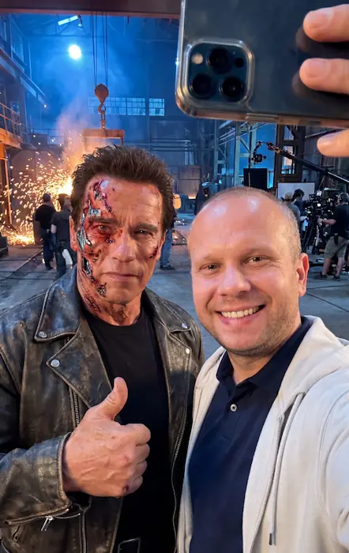

Fan Table
| Film Title | Release Year | Director | Main Villain | My Rating |
|---|---|---|---|---|
| The Terminator | 1984 | James Cameron | T-800 | ⭐⭐⭐ |
| Terminator 2: Judgement Day | 1991 | James Cameron | T-1000 | ⭐⭐⭐ |
| Terminator 3: Rise of the Machines | 2003 | Jonathan Mostow | T-X | ⭐⭐ |
| Terminator Salvation | 2009 | McG | Skynet / Marcus | ⭐⭐⭐⭐⭐ |
| Terminator Genisys | 2015 | Alan Taylor | Skynet / T-800 | ⭐⭐⭐⭐ |
| Terminator: Dark Fate | 2019 | Tim Miller | Rev-9 | ⭐ |

Lore and timeline information referenced from Terminator Wiki. Image sourced from Pexels under free license.